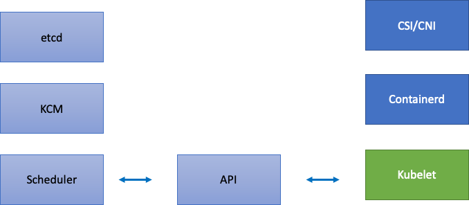

Kubernetes 擴展理論¶
節點 vs. 變動率¶
當我們討論 Kubernetes 的可擴展性時,通常是以集群中的節點數量來衡量。有趣的是,這通常並不是理解可擴展性最有用的指標。例如,一個有 5,000 個節點的集群,如果 Pod 數量保持固定,那麼控制平面在初始設置後就不會受到太大壓力。但是,如果我們有一個 1,000 個節點的集群,在不到一分鐘的時間內嘗試創建 10,000 個短暫的 Job,那麼就會對控制平面造成持續的壓力。
單單使用節點數量來理解擴展性可能會產生誤導。更好的方法是考慮在特定時間範圍內(我們在這裡使用 5 分鐘,因為這是 Prometheus 查詢的預設值)發生的變化率。讓我們探討為什麼從變化率的角度來看待問題,可以更好地了解需要調整哪些參數來實現我們所需的擴展。
以每秒查詢數(QPS)思考¶
Kubernetes 為每個組件(Kubelet、Scheduler、Kube Controller Manager 和 API 伺服器)都設有一些保護機制,以防止壓垮 Kubernetes 鏈中的下一個環節。例如,Kubelet 有一個標誌可以限制對 API 伺服器的調用速率。這些保護機制通常(但並非總是)以每秒查詢數(QPS)的形式表達。
在更改這些 QPS 設置時必須格外小心。消除一個瓶頸(如 Kubelet 的每秒查詢數)將會影響其他下游組件。這可能會在超過某個速率時使整個系統崩潰,所以理解和監控 Kubernetes 服務鏈的每個部分是成功擴展工作負載的關鍵。
Note
API 伺服器有一個更複雜的系統,引入了 API 優先級和公平性,我們將單獨討論這個問題。
Note
小心,有些指標看起來是合適的,但實際上測量的是其他東西。例如,kubelet_http_inflight_requests 只與 Kubelet 中的指標伺服器有關,而不是 Kubelet 到 API 伺服器的請求數。這可能會導致我們錯誤地配置 Kubelet 上的 QPS 標誌。查看特定 Kubelet 的審核日誌會是一種更可靠的方式來檢查指標。
擴展分散式組件¶
由於 EKS 是一個托管服務,讓我們將 Kubernetes 組件分為兩類:AWS 托管組件(包括 etcd、Kube Controller Manager 和 Scheduler,位於圖表左側)和客戶可配置組件(如 Kubelet、容器運行時和調用 AWS API 的各種操作員,如網絡和存儲驅動程式,位於圖表右側)。我們將 API 伺服器放在中間,因為客戶可以配置 API 優先級和公平性設置。

上游和下游瓶頸¶
在監控每個服務時,我們需要查看兩個方向的指標,以找出瓶頸。讓我們以 Kubelet 為例,學習如何做到這一點。Kubelet 同時與 API 伺服器和容器運行時進行通信;我們需要監控什麼,以及如何監控,才能發現任何一個組件是否出現問題?
每個節點的 Pod 數量¶
當我們查看擴展數字(如每個節點可以運行多少個 Pod)時,我們可能會直接接受上游支持的 110 個 Pod 的數量。
Note
https://kubernetes.io/docs/setup/best-practices/cluster-large/
但是,您的工作負載可能比在擴展測試中使用的更複雜。為了確保我們可以在生產環境中運行所需的 Pod 數量,讓我們確保 Kubelet 能夠"跟上"Containerd 運行時。

簡單地說,Kubelet 正在從容器運行時(在我們的例子中是 Containerd)獲取 Pod 的狀態。如果 Pod 的狀態變化太快怎麼辦?如果變化率太高,對容器運行時的請求可能會超時。
Note
Kubernetes 正在不斷發展,這個子系統目前正在進行變更。https://github.com/kubernetes/enhancements/issues/3386


在上圖中,我們看到一條平坦的線,表示我們剛剛達到了 Pod 生命週期事件生成持續時間指標的超時值。如果您想在自己的集群中看到這一點,可以使用以下 PromQL 語法:
如果我們看到這種超時行為,就知道我們已經將節點推到了它所能承受的極限。我們需要解決導致超時的原因,然後再繼續。這可以通過減少每個節點的 Pod 數量,或者查找可能導致大量重試(從而影響變動率)的錯誤來實現。重要的是要意識到,使用指標是理解節點是否能夠處理分配的 Pod 變動率的最佳方式,而不是使用固定的數字。
通過指標進行擴展¶
雖然使用指標來優化系統是一個老生常談的概念,但在人們開始使用 Kubernetes 時,它往往會被忽略。我們應該關注於找出能幫助我們發現系統瓶頸的指標,而不是專注於特定的數字(例如 110 個 Pod 每個節點)。了解這些指標的正確閾值可以讓我們高度確信系統已經得到了最佳配置。
變更的影響¶
一個可能會陷入麻煩的常見模式是,關注第一個看起來可疑的指標或日誌錯誤。當我們發現 Kubelet 出現超時時,我們可能會嘗試一些隨機的事情,比如增加 Kubelet 每秒鐘允許發送的速率等。然而,明智的做法是先看看錯誤下游的整體情況。每次變更都要有目的,並有數據支持。
Kubelet 的下游包括 Containerd 運行時(Pod 錯誤)、DaemonSet(如存儲驅動程式 CSI 和網絡驅動程式 CNI,它們與 EC2 API 通信)等。

讓我們繼續前面的 Kubelet 跟不上運行時的例子。有很多地方我們可能會將節點打包得太密集,從而觸發錯誤。

在為我們的工作負載設計合適的節點大小時,這些很容易被忽略的信號可能會給系統施加不必要的壓力,從而限制我們的擴展性和性能。
不必要錯誤的成本¶
Kubernetes 控制器擅長在出現錯誤條件時進行重試,但這也是有代價的。這些重試可能會增加 Kube Controller Manager 等組件的壓力。定期確保我們的集群在重大操作(如升級)之前是無錯誤的,是擴展測試的一個重要原則,這樣可以在出現意外事件時簡化故障排查日誌。
擴展我們的視野¶
在擁有 1,000 多個節點的大規模集群中,我們不想逐個查找瓶頸。在 PromQL 中,我們可以使用名為 topk 的函數來找到數據集中的最高值;K 是我們放置要獲取的項目數量的變量。這裡我們使用三個節點,以了解集群中的所有 Kubelet 是否都飽和。到目前為止,我們一直在關注延遲,現在讓我們看看 Kubelet 是否丟棄了事件。
分解這個語句:
- 我們使用 Grafana 變量
$__rate_interval來確保它獲取所需的四個樣本。這避免了一個複雜的監控主題。 topk給我們只有最高結果,數字 3 限制了這些結果為三個。這是一個非常適用於集群範圍指標的函數。{}告訴我們沒有任何過濾條件,通常您會放置任何採集規則的作業名稱,但由於這些名稱會有所不同,我們將其留空。
將問題一分為二¶
要解決系統中的瓶頸,我們將採取找到一個指標來顯示上游或下游是否存在問題的方法,這樣可以將問題一分為二。這也將成為我們展示指標數據的一個核心原則。
一個不錯的起點是 API 伺服器,因為它可以讓我們看到是客戶端應用程式還是控制平面存在問題。